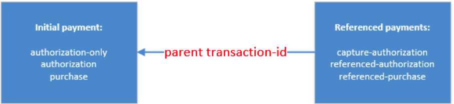

Supported cards
The Payment SDK supports all major credit card schemes. Credit card transactions supported directly from Mobile SDKs:
- authorization - Reserves funds from the [Card Holder]'s account. 7 days left to conduct a [capture] on this transaction. It can refer to a previous transaction only referred through a token-id.
- authorization-only - Verifies the card's validity without leaving an authorized amount.
- capture-authorization - Takes funds from the [Card Holder]'s account. Must follow an [authorization] or [authorization Supplementary] chain referred by a [Parent Transaction ID].
- purchase - Takes funds from the [Card Holder]'s account. A one-step process to conduct two Transaction Types: [authorization] and [capture]. It can refer to a previous transaction only referred through a token-id.
- referenced-authorization - Reserve funds from the [Card Holder]'s account. Identical to a [authorization] except for the fact that it refers to a previous [authorization] transaction referred through a [Parent Transaction ID]. Amount can be amended.
- referenced-purchase - Takes funds from the [Card Holder]'s account. Identical to a [purchase] except for the fact that it refers to any previous purchase referred through a [Parent Transaction ID] with any amount.
Follow-up transactions like capture, refund, credit and void are supported only via REST API endpoint:
- refund - Gives funds to the [Card Holder]'s account, referring to an eligible previous [capture], [purchase] etc.
- credit - Moves funds from the [Merchant] to the [Account Holder].
- void - Frees reserved funds from the [Card Holder]'s account.
Usage of CVC is mandatory except for capture-authorization and is optional for referenced payments.
Payment flow
- Merchant sends a calculated signature based on the Secret Key along with parameters for a payment request. Then, gateway compares the received signature with the one calculated on its side. If the gateway accepts and processes the request, the response is sent back with the Token information.
- Depending on your settings, any further request can be made using the Token without the need to enter the credit card information again (the Token would have to be stored on the 3rd party side – securely).
- (optional step) 3rd party app initiates the Payment SDK with the optional PaymentPageStyle style object (used for styling the payment form provided by the SDK, see chapter 2.2 Styling of a Payment Form).
Referenced transactions
Transaction types:
- referenced-authorization
- referenced-purchase
It is possible to place referenced transactions based on a previous transaction. Such transactions always refer to a parent transaction of the initial payment.
parentTransactionID – Transaction-ID (also referred to as parent transaction) to be used in capture-authorization and referenced transaction types

Referenced transactions
Card tokens
Transaction types:
- authorization
- authorization-only
- purchase
tokenID – card token which is created at each card payment and can be used instead of the card previously used by referencing the Token-ID instead of a Parent Transaction ID.
You can only place a transaction with token from any previous: authorization, authorization-only or purchase transaction.
 1.8.11
1.8.11